QuantResearch
A comprehensive Python library for technical indicator calculation, strategy backtesting via QuantQL, advanced candlestick visualization, and a full GUI dashboard — supporting NSE, BSE, US, and Crypto markets.
Installation
Install from PyPI:
Or install from source:
git clone https://github.com/vinayak1729-web/QuantR.git cd QuantR pip install -e .
Quick Start
Get up and running in under 5 minutes:
from QuantResearch import fetch_data, Rsi, plot_rsi
# Fetch stock data
data = fetch_data("AAPL", start_date="2023-01-01", end_date="2024-01-01")
# Calculate RSI
rsi = Rsi(data['Close'], period=14)
# Visualize with candlestick chart
plot_rsi(data=data, rsi=rsi, period=14, ticker="AAPL", kind='candle')
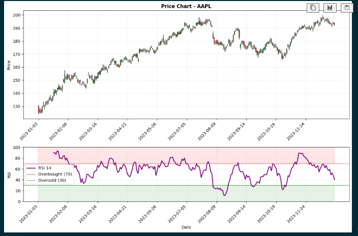
Launch the Dashboard
from QuantResearch.dashboard import launch_dashboard launch_dashboard()
Run a Backtest with QuantQL
from QuantResearch.backtest_engine import run_backtest
result = run_backtest("""
BACKTEST "RSI + MACD Strategy"
MARKET NSE
TICKER RELIANCE
PERIOD 1Y
USE RSI(14)
USE MACD(12, 26, 9)
BUY WHEN RSI > 30 AND MACD CROSSES_ABOVE SIGNAL
SELL WHEN RSI > 70 OR MACD CROSSES_BELOW SIGNAL
CAPITAL 100000
STOP_LOSS 5%
TAKE_PROFIT 15%
COMMISSION 0.1%
""")
for key, val in result.metrics.items():
print(f"{key}: {val}")
Features
Data Fetching
OHLCV from Yahoo Finance — NSE, BSE, US & Crypto
18+ Indicators
RSI, MACD, BB, ATR, Stochastic, ADX, Ichimoku, SAR, OBV, Fibonacci & more
QuantQL Engine
Domain-specific backtesting language with full analytics
Candlestick Charts
Professional dark-theme OHLC candlestick visualizations
GUI Dashboard
5-tab Tkinter dashboard — Historical, Live, Multi-Ticker, Watchlist, Backtest
India + Global
Auto-resolves NSE/BSE tickers, ₹/crore/lakh formatting, Nifty 50 defaults
Quant Metrics
Sharpe, Sortino, Calmar, VaR, CVaR, Alpha, Beta, CAGR, Max Drawdown
Signal Generation
Automatic buy/sell crossover detection and trade markers
Data Fetching
fetch_data(ticker, start_date, end_date)
Downloads historical OHLCV (Open, High, Low, Close, Volume, Adjusted Close) data from Yahoo Finance. Supports NSE (.NS), BSE (.BO), US, and Crypto (e.g. BTC-USD) tickers.
| Parameter | Type | Description |
|---|---|---|
ticker | str | Stock ticker symbol — e.g. "AAPL", "RELIANCE.NS", "BTC-USD" |
start_date | str | Start date in "YYYY-MM-DD" format |
end_date | str | End date in "YYYY-MM-DD" format |
Returns: pandas.DataFrame with columns: Open, High, Low, Close, Adj Close, Volume
from QuantResearch import fetch_data
data = fetch_data("RELIANCE.NS", "2023-01-01", "2024-01-01")
print(data.head())
print(f"Shape: {data.shape}")
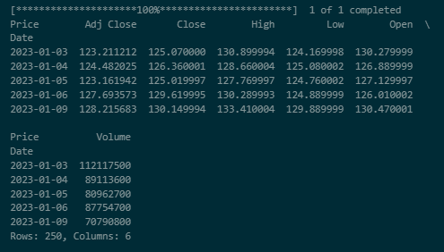
RSI — Relative Strength Index
Rsi(price, period=14)
Momentum oscillator measuring the magnitude of recent price changes. Returns values from 0 to 100.
- price
pandas.Series— Price series (typically closing prices)- period
int— Lookback period (default: 14)
from QuantResearch import fetch_data, Rsi
data = fetch_data("AAPL", "2023-01-01", "2024-01-01")
rsi = Rsi(data['Close'], period=14)
print(f"Current RSI: {rsi.iloc[-1]:.2f}")
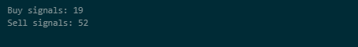
MACD — Moving Average Convergence Divergence
macd(price, short_period=12, long_period=26, signal_period=9)
Trend-following momentum indicator showing the relationship between two exponential moving averages.
- price
pandas.Series— Price series- short_period
int— Short EMA period (default: 12)- long_period
int— Long EMA period (default: 26)- signal_period
int— Signal line EMA period (default: 9)
Returns: Tuple of (macd_line, signal_line, histogram)
from QuantResearch import fetch_data, macd, plot_macd
data = fetch_data("TSLA", "2024-01-01", "2024-11-01")
macd_line, signal_line, hist = macd(data['Close'])
bullish = (macd_line > signal_line) & (macd_line.shift(1) <= signal_line.shift(1))
print(f"Bullish crossovers: {bullish.sum()}")
plot_macd(macd_line, signal_line, hist, ticker="TSLA", data=data, kind='candle')
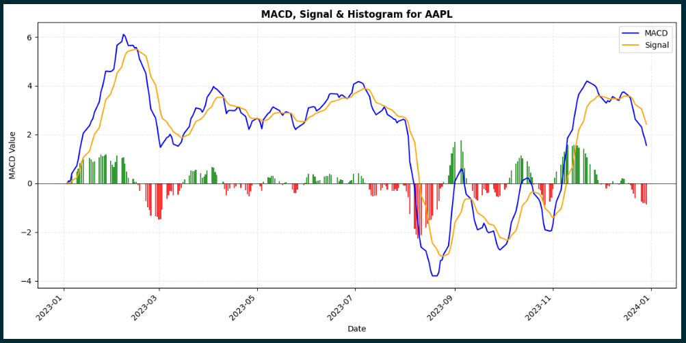
Bollinger Bands
bb_bands(price, period=20, num_std=2)
Volatility bands placed above and below a moving average. Useful for squeeze detection and overbought/oversold conditions.
- price
pandas.Series— Price series- period
int— Lookback period (default: 20)- num_std
int/float— Number of standard deviations (default: 2)
Returns: Tuple of (upper_band, middle_band, lower_band)
from QuantResearch import fetch_data, bb_bands, plot_bollinger
data = fetch_data("NVDA", "2023-01-01", "2024-01-01")
upper, mid, lower = bb_bands(data['Close'], period=20, num_std=2)
band_width = (upper - lower) / mid
squeeze = band_width < band_width.quantile(0.25)
print(f"Squeeze periods: {squeeze.sum()}")
plot_bollinger(data=data, adj_close=data['Close'], bb_upper=upper,
bb_mid=mid, bb_lower=lower, ticker="NVDA", kind='candle')
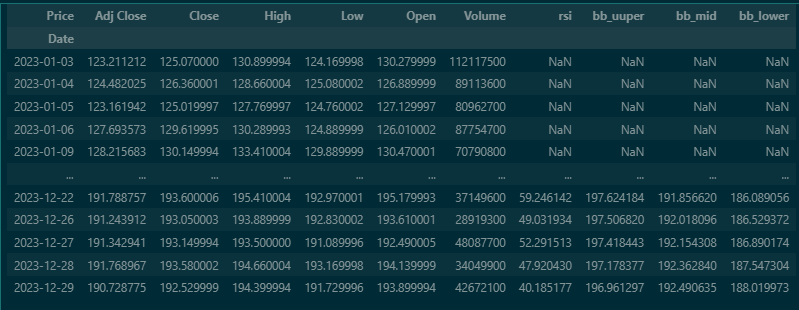
ATR — Average True Range
atr(data, period=14)
Volatility indicator measuring the average range of price movement using Wilder's Smoothing.
from QuantResearch import fetch_data, atr
data = fetch_data("AAPL", "2023-01-01", "2024-01-01")
atr_values = atr(data, period=14)
print(f"Current ATR: {atr_values.iloc[-1]:.2f}")
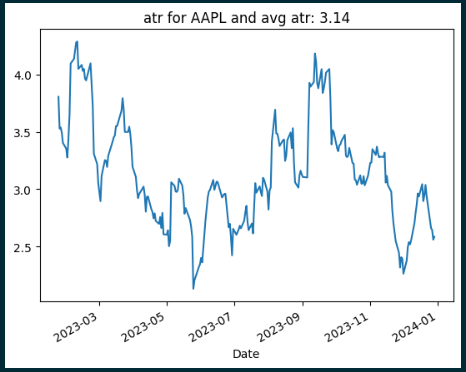
SMA — Simple Moving Average
sma(price, period=9)
Average price over a specified period. Useful for identifying trend direction and support/resistance.
from QuantResearch import fetch_data, sma
data = fetch_data("AAPL", "2023-01-01", "2024-01-01")
sma_20 = sma(data['Close'], period=20)
sma_50 = sma(data['Close'], period=50)
golden_cross = (sma_20 > sma_50) & (sma_20.shift(1) <= sma_50.shift(1))
print(f"Golden Cross signals: {golden_cross.sum()}")
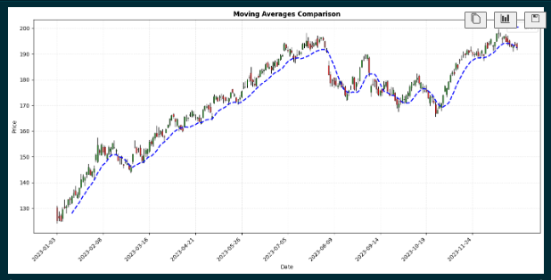
EMA — Exponential Moving Average
ema(price, period=9)
Weighted average giving more importance to recent prices. More responsive than SMA with reduced lag.
from QuantResearch import fetch_data, ema
data = fetch_data("AAPL", "2023-01-01", "2024-01-01")
ema_12 = ema(data['Close'], period=12)
ema_26 = ema(data['Close'], period=26)
print(f"EMA 12: {ema_12.iloc[-1]:.2f} EMA 26: {ema_26.iloc[-1]:.2f}")
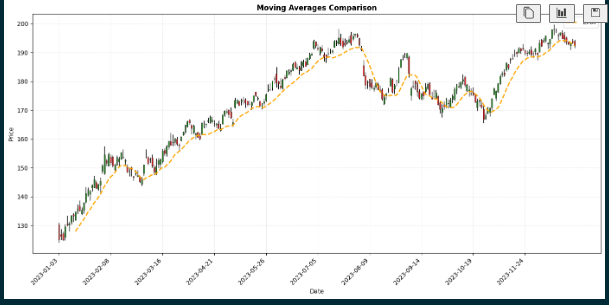
DEMA & TEMA
demma(price, period=9)
temma(price, period=9)
DEMA (Double Exponential Moving Average) provides smoother trend indication with reduced lag. TEMA (Triple Exponential Moving Average) offers the smoothest output with minimal lag.
from QuantResearch import fetch_data, demma, temma
data = fetch_data("AAPL", "2023-01-01", "2024-01-01")
dema_val = demma(data['Close'], period=20)
tema_val = temma(data['Close'], period=20)
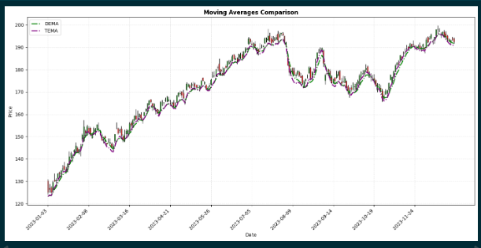
RVWAP — Rolling Volume-Weighted Average Price
RVWAP(high, low, close, volume, period=20)
Price benchmark reflecting both volume and price data — useful for identifying institutional trading levels.
from QuantResearch import fetch_data, RVWAP
data = fetch_data("AAPL", "2023-01-01", "2024-01-01")
vwap = RVWAP(data['High'], data['Low'], data['Close'], data['Volume'], period=20)
print(f"Current RVWAP: {vwap.iloc[-1]:.2f}")
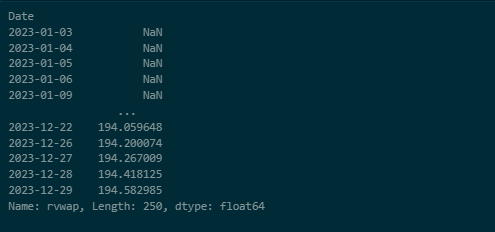
Stochastic Oscillator
stochastic(data, k_period=14, d_period=3)
Momentum indicator comparing the closing price to the high-low range over a lookback period.
Returns: Tuple of (%K series, %D series)
from QuantResearch.indicators import fetch_data, stochastic
data = fetch_data("TCS.NS", "2023-01-01", "2024-01-01")
k, d = stochastic(data, k_period=14, d_period=3)
print(f"Stoch %K: {k.iloc[-1]:.2f} %D: {d.iloc[-1]:.2f}")
Williams %R
williams_r(data, period=14)
Momentum indicator showing overbought/oversold conditions on an inverted 0 to −100 scale.
from QuantResearch.indicators import fetch_data, williams_r
data = fetch_data("INFY.NS", "2023-01-01", "2024-01-01")
wr = williams_r(data, period=14)
print(f"Williams %R: {wr.iloc[-1]:.2f}")
OBV — On-Balance Volume
obv(data)
Cumulative volume-based momentum indicator. Adds volume on up-days and subtracts on down-days — useful for confirming trends via volume flow.
from QuantResearch.indicators import fetch_data, obv
data = fetch_data("AAPL", "2023-01-01", "2024-01-01")
obv_series = obv(data)
Parabolic SAR
parabolic_sar(data, af_start=0.02, af_step=0.02, af_max=0.2)
Trend-following indicator used to identify potential price reversals and trail stops.
Returns: Tuple of (sar_series, trend_series) — trend is 1 (uptrend) or -1 (downtrend)
from QuantResearch.indicators import fetch_data, parabolic_sar
data = fetch_data("RELIANCE.NS", "2023-01-01", "2024-01-01")
sar, trend = parabolic_sar(data)
print(f"SAR: {sar.iloc[-1]:.2f} Trend: {'UP' if trend.iloc[-1] == 1 else 'DOWN'}")
ADX — Average Directional Index
adx(data, period=14)
Measures trend strength regardless of direction, along with +DI and −DI directional indicators.
Returns: Tuple of (adx_series, plus_di_series, minus_di_series)
from QuantResearch.indicators import fetch_data, adx
data = fetch_data("TCS.NS", "2023-01-01", "2024-01-01")
adx_val, plus_di, minus_di = adx(data, period=14)
print(f"ADX: {adx_val.iloc[-1]:.2f} +DI: {plus_di.iloc[-1]:.2f} -DI: {minus_di.iloc[-1]:.2f}")
Ichimoku Cloud
ichimoku(data, tenkan=9, kijun=26, senkou_b=52)
Comprehensive multi-component indicator showing support/resistance, trend direction, and momentum simultaneously.
Returns: Tuple of (tenkan_sen, kijun_sen, senkou_a, senkou_b_line, chikou_span)
from QuantResearch.indicators import fetch_data, ichimoku
data = fetch_data("HDFCBANK.NS", "2023-01-01", "2024-01-01")
tenkan, kijun, senkou_a, senkou_b, chikou = ichimoku(data)
Pivot Points
pivot_points(data)
Classic Pivot Points — calculates support and resistance levels from the last completed bar's High, Low, and Close.
Returns: dict with keys: P, R1, R2, R3, S1, S2, S3
from QuantResearch.indicators import fetch_data, pivot_points
data = fetch_data("SBIN.NS", "2023-01-01", "2024-01-01")
pp = pivot_points(data)
print(f"Pivot: {pp['P']:.2f} R1: {pp['R1']:.2f} S1: {pp['S1']:.2f}")
Fibonacci Retracement Levels
fibonacci_levels(data)
Calculates 7 standard Fibonacci retracement levels across the dataset's high-low range.
Returns: dict with keys: '0%', '23.6%', '38.2%', '50%', '61.8%', '78.6%', '100%'
from QuantResearch.indicators import fetch_data, fibonacci_levels
data = fetch_data("RELIANCE.NS", "2023-01-01", "2024-01-01")
fib = fibonacci_levels(data)
for level, price in fib.items():
print(f"Fib {level}: {price:.2f}")
Slope — Linear Regression Slope
slope(series, period=14)
Calculates the normalized trend slope as (slope / mean_price) × 100 (percentage per bar) — useful for quantifying trend momentum.
from QuantResearch.indicators import fetch_data, slope
data = fetch_data("AAPL", "2023-01-01", "2024-01-01")
slp = slope(data['Close'], period=14)
Candlestick Chart
plot_candlestick(data, ticker='Stock')
Creates professional dark-theme candlestick charts showing OHLC price action. All visualization functions support kind='line' (default) and kind='candle'.
from QuantResearch import fetch_data, plot_candlestick
data = fetch_data("AAPL", "2023-01-01", "2024-01-01")
plot_candlestick(data, ticker="AAPL")
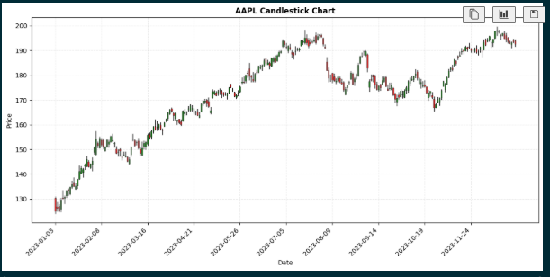
RSI Visualization
plot_rsi(data, rsi, period=14, lower=30, upper=70, ticker, kind='line')
from QuantResearch import fetch_data, Rsi, plot_rsi
data = fetch_data("AAPL", "2023-01-01", "2024-01-01")
rsi = Rsi(data['Close'], period=14)
plot_rsi(rsi=rsi, period=14, ticker="AAPL", kind='line')
plot_rsi(data=data, rsi=rsi, period=14, ticker="AAPL", kind='candle')
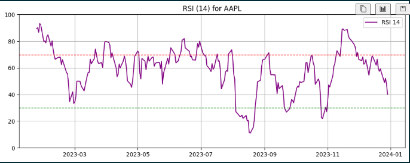
MACD Visualization
plot_macd(macd_line, signal_line, histogram, ticker, data, kind='line')
from QuantResearch import fetch_data, macd, plot_macd
data = fetch_data("AAPL", "2023-01-01", "2024-01-01")
macd_line, signal_line, hist = macd(data['Close'])
plot_macd(macd_line, signal_line, hist, ticker="AAPL", data=data, kind='candle')
Bollinger Bands Visualization
plot_bollinger(data, adj_close, bb_upper, bb_mid, bb_lower, ticker, kind='line')
from QuantResearch import fetch_data, bb_bands, plot_bollinger
data = fetch_data("AAPL", "2023-01-01", "2024-01-01")
upper, mid, lower = bb_bands(data['Close'], period=20)
plot_bollinger(adj_close=data['Close'], bb_upper=upper,
bb_mid=mid, bb_lower=lower, ticker="AAPL")
plot_bollinger(data=data, adj_close=data['Close'], bb_upper=upper,
bb_mid=mid, bb_lower=lower, ticker="AAPL", kind='candle')
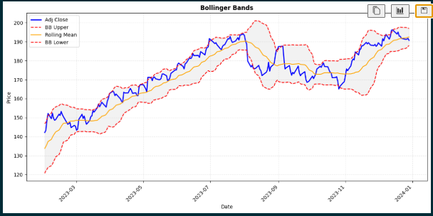
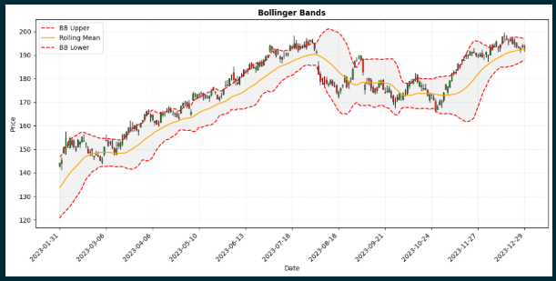
Moving Averages Visualization
plot_moving_averages(data, price, sma_val, ema_val, dema_val, tema_val, ticker, kind='line')
from QuantResearch import fetch_data, sma, ema, demma, temma, plot_moving_averages
data = fetch_data("AAPL", "2023-01-01", "2024-01-01")
plot_moving_averages(data=data, sma_val=sma(data['Close'], 20),
ema_val=ema(data['Close'], 20),
dema_val=demma(data['Close'], 20),
tema_val=temma(data['Close'], 20),
ticker="AAPL", kind='candle')
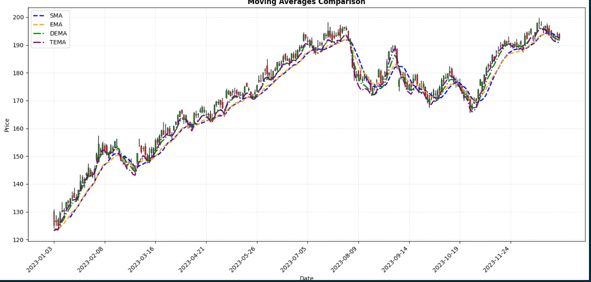
QuantQL — Backtesting Language
QuantQL is a domain-specific language built into QuantResearch that lets you write trading strategies in plain, readable syntax and backtest them against real historical data. The engine handles data fetching, indicator computation, trade simulation, stop-loss/take-profit, commission/slippage, equity curve tracking, and full performance metrics.
Language Syntax
BACKTEST "<Strategy Name>" MARKET <NSE | BSE | US | CRYPTO | Auto> TICKER <SYMBOL> PERIOD <1Y | 6M | 3M | 30D | 2W | ...> USE <INDICATOR>(<params>) BUY WHEN <condition> SELL WHEN <condition> CAPITAL <amount> POSITION_SIZE <percent>% STOP_LOSS <percent>% TAKE_PROFIT <percent>% COMMISSION <percent>% SLIPPAGE <percent>%
Keyword Reference
| Keyword | Description | Example |
|---|---|---|
BACKTEST | Strategy name (quoted string) | BACKTEST "My Strategy" |
MARKET | Exchange/market selector | MARKET NSE |
TICKER | Asset symbol | TICKER RELIANCE |
PERIOD | Historical lookback | PERIOD 1Y |
USE | Declare an indicator | USE RSI(14) |
BUY WHEN | Entry condition | BUY WHEN RSI < 30 |
SELL WHEN | Exit condition | SELL WHEN RSI > 70 |
CAPITAL | Starting capital | CAPITAL 100000 |
STOP_LOSS | Stop-loss % | STOP_LOSS 5% |
TAKE_PROFIT | Take-profit % | TAKE_PROFIT 15% |
COMMISSION | Per-trade commission | COMMISSION 0.1% |
SLIPPAGE | Per-trade slippage | SLIPPAGE 0.05% |
Period & Market Formats
| Period | Meaning | Market | Description |
|---|---|---|---|
1Y | 1 year | NSE | Indian NSE → .NS |
6M | 6 months | BSE | Indian BSE → .BO |
3M | 3 months | US | US markets |
2W | 2 weeks | CRYPTO | Crypto → -USD |
30D | 30 days | Auto | Auto-detect NSE |
Supported Indicators in QuantQL
USE Declaration | Available Names in Conditions |
|---|---|
USE RSI(14) | RSI |
USE MACD(12, 26, 9) | MACD, SIGNAL, HISTOGRAM |
USE SMA(20) | SMA |
USE EMA(20) | EMA |
USE DEMA(20) | DEMA |
USE TEMA(20) | TEMA |
USE BB(20) | BB_UPPER, BB_MID, BB_LOWER |
USE ATR(14) | ATR |
USE STOCH(14, 3) | STOCH_K, STOCH_D |
USE WILLIAMS(14) | WILLIAMS |
USE ADX(14) | ADX, PLUS_DI, MINUS_DI |
USE SLOPE(14) | SLOPE |
USE SAR | SAR, SAR_TREND |
USE OBV | OBV |
USE VWAP(20) | VWAP |
Price primitives (no USE needed): CLOSE, OPEN, HIGH, LOW, VOLUME
Condition Operators
| Operator | Description | Example |
|---|---|---|
> < >= <= | Comparison | RSI > 70 |
== != | Equality | SAR_TREND == 1 |
CROSSES_ABOVE | Crossover upward | MACD CROSSES_ABOVE SIGNAL |
CROSSES_BELOW | Crossover downward | EMA CROSSES_BELOW SMA(50) |
AND OR NOT | Logical | RSI > 30 AND ADX > 25 |
Conditions can be grouped with parentheses:
BUY WHEN (RSI < 35 AND CLOSE < BB_LOWER) OR STOCH_K CROSSES_ABOVE STOCH_D
Strategy Examples
RSI + MACD Crossover (NSE)
BACKTEST "RSI + MACD Crossover" MARKET NSE TICKER MARUTI PERIOD 1Y USE RSI(14) USE MACD(12, 26, 9) BUY WHEN RSI > 30 AND MACD CROSSES_ABOVE SIGNAL SELL WHEN RSI > 70 OR MACD CROSSES_BELOW SIGNAL CAPITAL 100000 STOP_LOSS 5% TAKE_PROFIT 15% COMMISSION 0.1%
Bollinger Bounce (NSE)
BACKTEST "Bollinger Bounce" MARKET NSE TICKER RELIANCE PERIOD 6M USE BB(20) USE RSI(14) BUY WHEN CLOSE < BB_LOWER AND RSI < 35 SELL WHEN CLOSE > BB_MID OR RSI > 65 CAPITAL 500000 STOP_LOSS 3% TAKE_PROFIT 10% COMMISSION 0.1%
SMA Trend + ADX Filter (US)
BACKTEST "SMA Trend Follow" MARKET US TICKER AAPL PERIOD 2Y USE SMA(50) USE EMA(20) USE ADX(14) BUY WHEN CLOSE > SMA(50) AND EMA > SMA(50) AND ADX > 25 SELL WHEN CLOSE < SMA(50) CAPITAL 50000 STOP_LOSS 7% TAKE_PROFIT 20% COMMISSION 0.05%
Crypto Momentum (BTC)
BACKTEST "BTC Momentum" MARKET CRYPTO TICKER BTC PERIOD 6M USE EMA(20) USE SMA(50) USE RSI(14) BUY WHEN EMA > SMA(50) AND RSI > 45 SELL WHEN EMA CROSSES_BELOW SMA(50) OR RSI > 80 CAPITAL 50000 STOP_LOSS 8% TAKE_PROFIT 25% COMMISSION 0.2%
Running a Backtest
from QuantResearch.backtest_engine import compile_strategy, run_backtest, BacktestEngine # Option 1 — run directly from script string result = run_backtest(my_strategy_script) # Option 2 — compile then run separately strategy = compile_strategy(my_strategy_script) engine = BacktestEngine(strategy) result = engine.run() # Access results print(result.metrics) # dict of performance metrics print(result.trades) # list of Trade objects print(result.equity_curve) # pandas.Series print(result.indicators) # dict of computed indicator Series print(result.data) # pandas.DataFrame of OHLCV data
Or launch the standalone backtest GUI:
from QuantResearch.backtest_engine import backtest_dashboard backtest_dashboard()
Backtest Metrics
After simulation, result.metrics contains:
| Metric | Description |
|---|---|
| Total Trades | Number of completed trades |
| Winners / Losers | Count of profitable and losing trades |
| Win Rate | Percentage of winning trades |
| Net P&L | Total profit/loss after commission |
| Total Return | Percentage return over the period |
| Gross Profit / Loss | Sum of all winning / losing trade P&L |
| Profit Factor | Gross Profit / |Gross Loss| |
| Avg Win / Avg Loss | Average profit/loss per trade |
| Max Consec Wins/Losses | Longest consecutive streaks |
| Avg Hold (days) | Average trade holding period |
| Sharpe Ratio | Risk-adjusted return (rf = 6.5%) |
| Max Drawdown | Largest peak-to-trough equity decline |
| Volatility | Annualised std dev of daily returns |
| Starting Capital / Final Equity | Initial and ending portfolio value |
Exporting Results
QuantResearch Dashboard
A full-featured GUI built with Tkinter and Matplotlib supporting India (NSE/BSE) and global (US/Crypto) markets with automatic ticker resolution, professional dark-theme charts, real-time live data, and a persistent watchlist.
from QuantResearch.dashboard import launch_dashboard launch_dashboard()
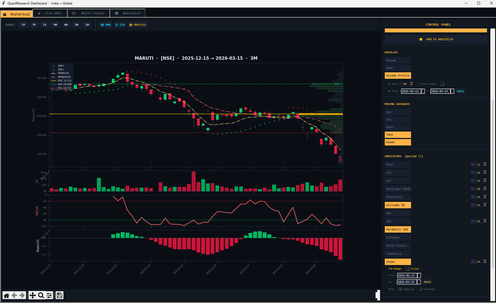
Tab 1 — Historical
The main analysis tab. Enter any ticker and select a timeframe to fetch and chart historical OHLCV data with any combination of indicators overlaid.
Market Selector: Auto, NSE, BSE, US, or Crypto. In Auto mode, known Indian NSE tickers resolve automatically (e.g. RELIANCE → RELIANCE.NS with ₹ formatting).
Timeframe Buttons: 1M, 3M, 6M, 9M, 1Y, 3Y, 5Y — each auto-adjusts indicator periods via adaptive settings.
Overlays: Volume bars, VWAP, Volume Profile (configurable bins 10–200), Benchmark comparison (^NSEI, ^BSESN, ^NSEBANK, SPY, QQQ, BTC-USD, GLD, or custom).
Available Indicators: All 18+ indicators with adjustable period spinboxes. Fibonacci custom date range supported.
Export: PNG image, CSV data export, and Quant Metrics panel toggle.
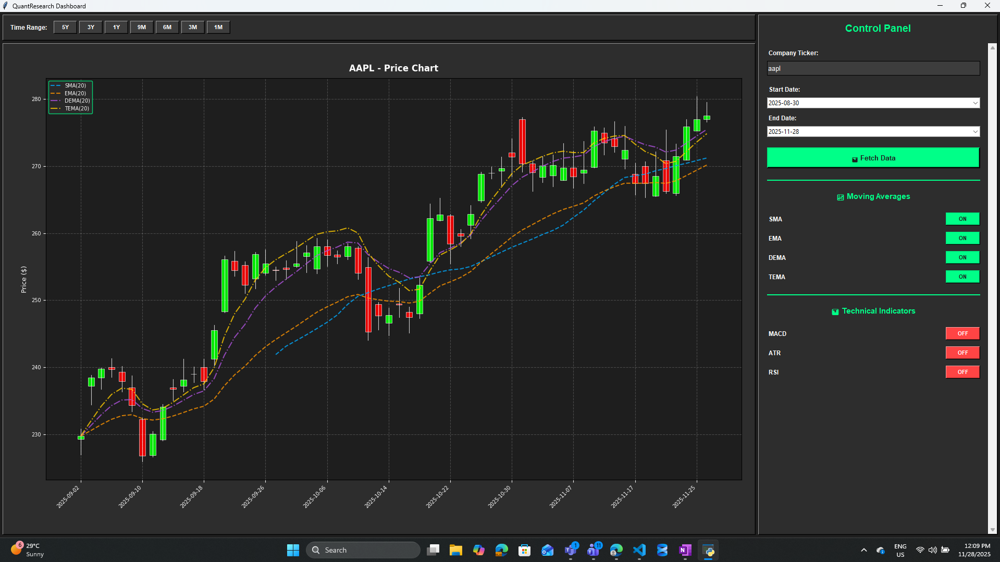
Tab 2 — Live OHLC
Live market data streaming via Yahoo Finance WebSocket. Displays real-time OHLC candlestick charts with optional RSI, MACD, Bollinger Bands, Stochastic, Volume, SMA, and EMA overlays. Supports configurable resample intervals (e.g. 1min, 5min) and price alerts.
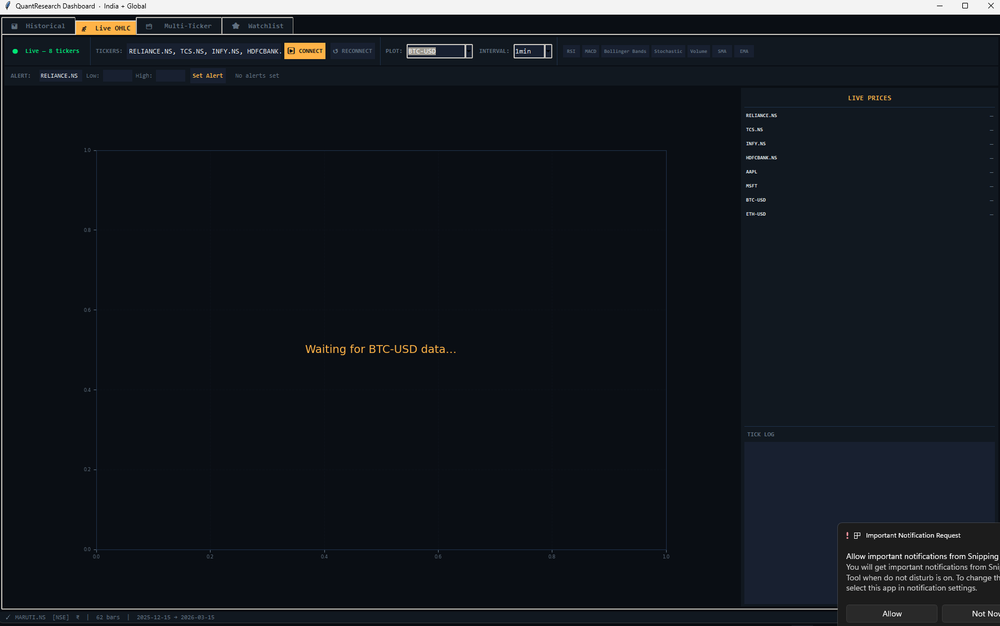
Tab 3 — Multi-Ticker
Fetch and display multiple tickers side by side in a scrollable multi-chart view. Each sub-chart independently shows price with optional RSI, MACD, ATR, Stochastic, and ADX indicator panels.
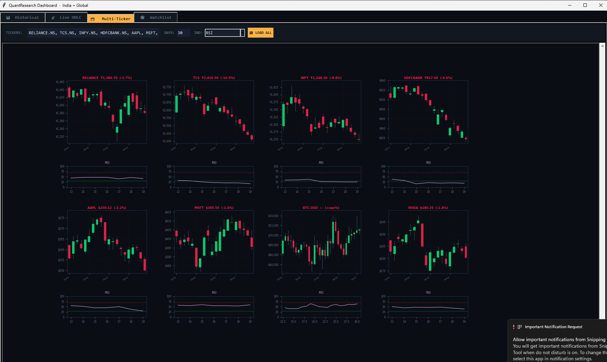
Tab 4 — Watchlist
A persistent watchlist stored in ~/.quant_watchlist.json. Shows live price, % change, 52-week high/low, and exchange for each ticker.
Features: Refresh Prices (background thread), Add Nifty 50 Defaults (top 10: RELIANCE.NS, TCS.NS, INFY.NS, etc.), Chart button (jump to Historical tab), and remove ticker.
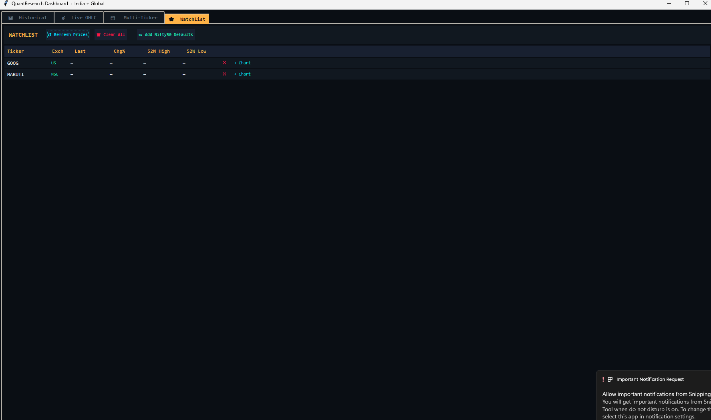
Tab 5 — Backtest (QuantQL)
Write and run QuantQL strategy scripts directly inside the dashboard. Includes a built-in code editor with 5 example strategies, visual trade book with buy/sell markers, equity curve panel, sub-indicator panels, full metrics table, trade log table, and CSV/PNG export.
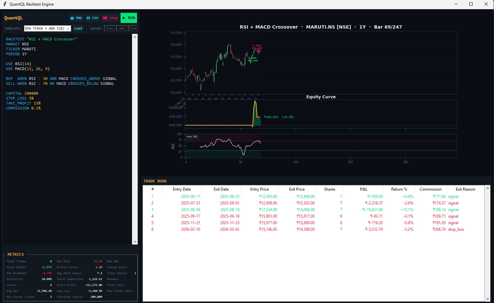
Quant Metrics Panel
Toggle with the 📈 Metrics button in the Historical tab. Computes institutional-grade performance statistics with optional benchmarking:
| Metric | Description |
|---|---|
| Total Return | Cumulative price return over the loaded period |
| CAGR | Compound Annual Growth Rate |
| Volatility | Annualised standard deviation (252-day basis) |
| Sharpe | Risk-adjusted return (rf = 6.5%) |
| Sortino | Downside risk-adjusted return |
| Max Drawdown | Largest peak-to-trough equity decline |
| Calmar | CAGR / |Max Drawdown| |
| VaR 95% | Value at Risk at 95% confidence |
| CVaR 95% | Conditional VaR (Expected Shortfall) |
| Win Rate | Frequency of positive daily returns |
| Profit Factor | Avg daily gain / avg daily loss |
| Beta | Systematic risk vs selected benchmark |
| Alpha (ann) | Annualised excess return vs benchmark |
| Correlation | Return correlation with benchmark |
| Bars | Total trading days in the dataset |
Values are color-coded: green = strong, gold = neutral, red = weak, cyan = informational.
Requirements
| Package | Version | Purpose |
|---|---|---|
| Python | >= 3.7 | Runtime environment |
| pandas | >= 1.3.0 | Data manipulation |
| yfinance | >= 0.2.0 | Financial data retrieval |
| matplotlib | >= 3.4.0 | Visualization |
| numpy | >= 1.19.0 | Numerical computations |
| tkinter | (stdlib) | GUI dashboard |
| tkcalendar | >= 1.6.0 | Date pickers in dashboard |
Disclaimer
Important: QuantResearch is provided for educational and research purposes only. It is not intended as financial advice.
Always consult with a qualified financial advisor before making investment decisions. Past performance does not guarantee future results. Technical indicators are tools — they should not be used as sole decision-making factors. Use proper risk management and test strategies thoroughly before live trading. Backtest results are simulated and do not account for all real-world trading conditions.